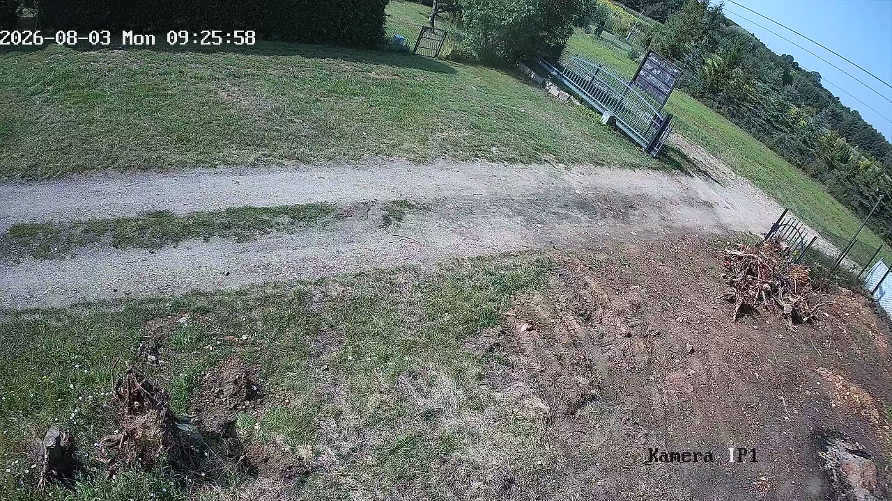
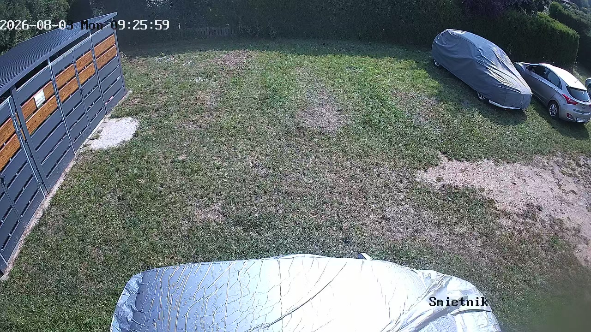

3 sierpnia 2026, godzina 09:26
Dokladnie ta minuta, kiedy powstalo zdjecie z odciskami lap (zdjecie 9:23, tu 9:26).
Wszystkie kanaly nagrywarki, pelne kadry.
Kanal 3 nie istnieje — to ta kamera bez hasla.

KANAL 1 „Brama”KANAL 2 „Wejscie”
BRAK MATERIALU — archiwum tej kamery zaczyna sie 4 sierpnia

KANAL 4 „Smietnik”